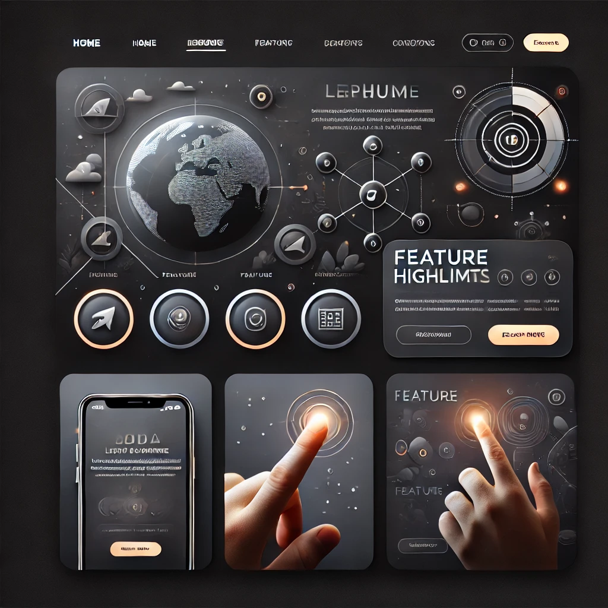
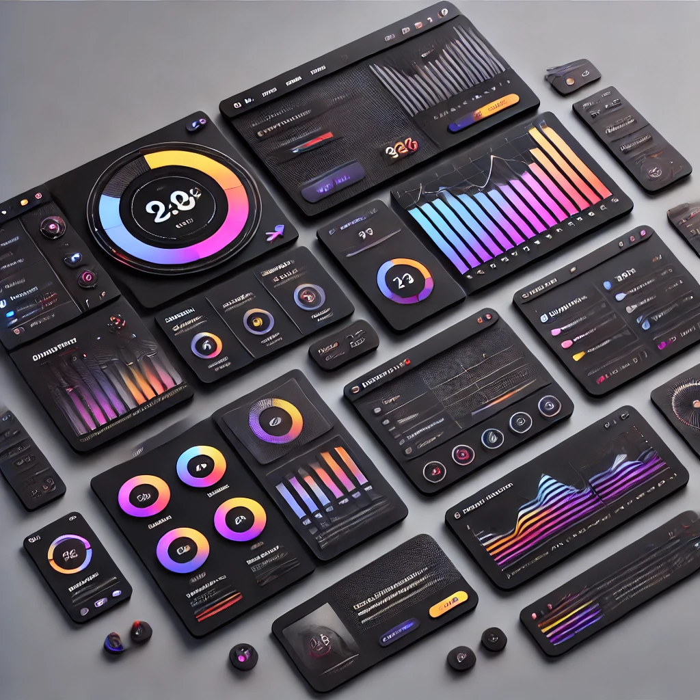

Mi Portfolio
Aquí algunos de mis proyectos más recientes.

Proyecto 1
Este proyecto consiste en el desarrollo de una landing page moderna e interactiva optimizada para captar la atención del usuario. Implementa una UI atractiva con animaciones fluidas, diseño responsive y estructura SEO-friendly. Se desarrolló con HTML, CSS, JavaScript y frameworks como React.js para mejorar la experiencia de usuario.
Ver más

Proyecto 2
Este proyecto es un dashboard interactivo diseñado para gestionar datos de usuarios en una plataforma digital. Se centró en la experiencia de usuario (UX) y la usabilidad, con un diseño oscuro y moderno, gráficos dinámicos e interfaz intuitiva.
Ver más
Proyecto 3
Este proyecto fue una auditoría y optimización SEO para mejorar la velocidad de carga y el posicionamiento en Google. Se implementaron buenas prácticas de SEO técnico, optimización de imágenes, minificación de código y mejoras en la indexación.
Ver más